 (pronounced "ee-zee kee-vee") Ezkv API 0.2.1
User Guide
Ezkv: JDK 21+ micro configuration framework"Ezkv lemon squeezy!"
A non-opinionated Java bootstrapping configuration library that allows recursive chain loading of configuration from key values.
Contents
Description
A non-opinionated Java bootstrapping configuration library that allows recursive chain loading of configuration from key values.
Key values are everywhere (also known as associative arrays, list of tuples, or name-value pairs)!
Environment variables, system properties, cloud metadata, vault, HTTP FORM post, URI queries, command line arguments, and even most forms of JSON, HOCON, TOML, YAML, and XML can all be represented as simple "key value" pairs.
Thus, it is the perfect common denominator for providing applications with initial configuration. We call this "bootstrapping configuration" and it is usually gathered even before logging.
To do this, Ezkv loads streams of key values (KeyValue) from resources. What is unique about it is that certain key values will load more key values to the current stream, which is what we call chaining.
URI -> KeyValues* -> URI* -> KeyValues -> ...
Streams are useful because they can be filtered and transformed, which matters because keys and values from various sources often need transformation. For example, environment variable names often need to be converted to lower case, and some prefix removed.
In short, it is a micro configuration framework that itself can be configured with key values.
Why and Use Case
Ezkv allows "users" to decide where their configuration comes from, instead of developers.
A simple command-line application use case might be like ripgrep, where a single environment variable dictates the location of configuration. Ezkv easily supports this style and also allows the user to load additional configuration from other places using key values in the configuration file. Ezkv can even enable configuration to come from other environment variables, which is something not typically possible with tools like ripgrep or similar utilities.
Another use case might be to simulate Spring Boot's configuration loading but without the rest of Spring Boot. Ezkv can achieve this declaratively through key values. In fact, a user could configure the previously mentioned ripgrep environment variable to perform a Spring Boot-like load of configuration.
Adding Ezkv to Your Project
To use Ezkv in your project, add the following dependency to your build configuration:
Maven
<dependency>
<groupId>io.jstach.ezkv</groupId>
<artifactId>ezkv-kvs</artifactId>
<version>0.2.1</version>
</dependency>
Gradle
implementation 'io.jstach.ezkv:ezkv-kvs:0.2.1'
Example Usage
A simple example using java.util.Properties files that could be parsed to KeyValues:
var kvs = KeyValuesSystem.defaults()
.loader()
.variables(Variables::ofSystemProperties) // Use system properties as base variables for interpolation
.add("classpath:/start.properties") // Use a classpath properties file
.add("system:///") // add system properties to override
.add("env:///") // add environment variables to override
.add("cmd:///?_filter_sed=s/^-D//") // add command line for final override using the prefix of -D
.load();
// Give the key values to some other config framework like Spring:
var map = kvs.toMap();
ConfigurableEnvironment env = applicationContext.getEnvironment();
env.getPropertySources().addFirst(new MapPropertySource("start", map));
start.properties you load more resources with special keys:
_load_foo=file:/./myapp.properties?_flag=optional # optionally load myapp.properties from the CWD.
Project Information
- Source Control
- https://github.com/jstachio/ezkv
- Team
-
- Adam Gent (agentgt) - lead
- Issues
- https://github.com/jstachio/ezkv/issues
- Community
- https://github.com/jstachio/ezkv/discussions
- User Guide
- This document
- Javadoc
- This document (modules listing at bottom)
Requirements
- Java 21 or greater
- A build system that supports running the Java compiler annotation processor
java.base
Architecture
Ezkv's two major concepts are:
KeyValues- a stream of key valuesKeyValuesResource- a URI with associated key-value metadata
Resources are used to load key values, and key values can be used to specify and find more resources (to load more key values). Ezkv is recursive.
For the rest of the explanation of architecture, we will go bottom-up.
KeyValue
A KeyValue object in ezkv, unlike a Map.Entry<String, String>, has more information than just the simple tuple of key and value.
- Immutable
- Have interpolated value as well as the original pre-interpolated value
- Have source information
- Whether or not it should be used for interpolation
- Whether or not it should be printed out ever (e.g., a password or other sensitive information)
Ezkv provides ergonomics for working with streams of key values to filter, collect, parse, and format them.
Notice that Ezkv is like a list of key values and thus:
- Order can be important
- There can be duplicate "keys" (that may or may not override in the final result)
Finally, a KeyValue can be a special key that can reference another resource to load.
These keys are usually prefixed with _ to avoid collision and maximize compatibility. The most important one is _load_name, where name is the name you assign to the resource and the value is a URI. This mini DSL syntax will be configurable in the future, so you can pick different key name patterns.
Interpolation
Ezkv can perform Bash-like interpolation on a stream of KeyValues (e.g., ${somevar:-${othervar}}). It does this by using the key values themselves and Variables. Variables are simply Function<String, String>.
This allows you to interpolate on key values with data you do not want in the final result (KeyValues). For example, it is common to use System.getProperties() as variables, but often you do not want all the system properties to end up in the KeyValues.
Variables can be added to the loader
Interpolation can be disabled with the resource flag no_interpolation.
Finally, you can load a resource as variables instead of KeyValues with the resource flag no_add.
var kvs = KeyValuesSystem.defaults()
.loader()
.add("classpath:/variable.properties?_flag=no_add") # Use the variable.properties file as variables.
.add("classpath:/start.properties")
.load();
start.properties
# start.properties
_load_app=classpath:/${app.name:-app}.properties
If app.name is defined in variable.properties, it will be used in the _load_app URI. Otherwise, app.properties will be used.
Often, interpolation will create a new stream of KeyValues where the value part of the key is replaced with the interpolated result; however, the original value is always retained.
KeyValuesResource
A KeyValuesResource has a URI and a symbolic name (used to find configuration).
It is backed by a key value with additional metadata on how to load that resource.
URIs are designed to point at resources, and the additional metadata in a KeyValuesResource is,
as you might guess, more KeyValues.
The additional metadata is used to determine how to load the key values and what metadata should be associated with each key value.
Some examples of metadata use cases include:
- The key values from the resource are sensitive and should not be easily printed out.
- The key values should not be interpolated because the data is raw.
- The loaded key values should or should not load other key values.
- The key values need their names transformed or some key values ignored.
This is all configurable through key values (and URIs), particularly using the _flags_name key.
Resource Key Value Configuration
Resource loading configuration can be done with special key values.
These can either be specified in the URI of the resource or as key values within the resource where the _load_[name] is specified.
The underscore is a called the prefix. That will be configurable at some point as well as the separator which is also an underscore.
The key names without the prefix and separators are:
- "load" - resource to load (required)
- "mediaType" or "mime" - media type of the resource (not required)
- "flags" or "flag" - flags for loading
- "param" or "parm" - parameters for custom plugins
- "filter" or "filt" - filters
Resource Configuration in Resource
The default key-value pattern to specify resources is:
_load_[name]=URI
_mediaType_[name]=Content Type or file extension to resolve format of resource for parsing
_flags_[name]=CSV of flag names
_param_[name]_[key]=String
_filter_[name]_[filter]=String expression for filter
The [name] part should be replaced with a name of your choosing, where only case-sensitive alphanumeric characters are allowed.
This becomes the symbolic name of the resource. Don't worry—those special keys will be filtered out.
The _load_[name] is the most important key as it dictates the name of the resource and the URI of the resource.
Resource Configuration in URI
The URI of the _load_[name] can also contribute to resource keys using the following format:
_load_custom=file://./something?_mediaType=properties&_flags=optional&_filter_sed=s/myapp_//&_param_custom=something
Notice: The resource name does not need to be specified with URI parameters, as it is deduced.
Resource Flags
Resource flags can be set with _flags_[name] in the resource or on the URI with _flags.
These can be repeatable parameters, and their values are combined.
This is currently a subset of the flags:
- "NO_REQUIRE" / "OPTIONAL" - Resources are usually required to exist; otherwise, an error occurs. This flag makes them not required.
- "SENSITIVE" -
The key values loaded from the resource will be marked as sensitive and will not be output in
toStringor similar methods. - "NO_ADD" -
The key values will not be added to the final result but will instead be used as
variables. - "NO_LOAD_CHILDREN" -
The resource is not allowed to chain additional resources (e.g., it cannot use
_load_keys).
Resource Media Type
Ezkv will try to automatically determine the media type of a resource based on the URI file extension.
However, in some cases, that is not sufficient. The key _mediaType_[name] allows you to explicitly specify the media type.
This is particularly useful for URIs that can load a key containing key-value data.
A real-world example of this is the
Spring Boot environment variable SPRING_APPLICATION_JSON.
An example of emulating that behavior in ezkv:
_load_springJson=env:///SPRING_APPLICATION_JSON?_mediaType=json
Note: JSON support is not provided out-of-the-box (OOB) and will be available as a separate module.
See KeyValuesMedia section for information on how to add more media types.Resource Filters
Filters can be applied to a resource to alter the key values after they are loaded but before being added to the final results. The ordering of filters matters, so it is generally recommended to use the URI notation, as the order is guaranteed.
The current filters provided out-of-the-box (OOB) are:
sed- Similar to the Unixsedutility but only supporting thes(substitute) andd(delete) commands.grep- Filters keys matching a regular expression.
Here is an example of using both filters:
_load_env=env:///?_filter_grep=^MY_APP_&_filter_sed=s/^MY_APP/myapp./
The above configuration will only load environment variables prefixed with MY_APP_ and will replace
MY_APP_ with myapp..
The original key name is always preserved for key tracking, so regardless of how keys are renamed, users can still identify where the key-value originally came from.
Note:
To add new filters, implement KeyValuesServiceProvider.KeyValuesFilter.
This interface allows you to provide custom filters.
Resource Loading
A KeyValuesLoader usually takes a KeyValuesResource and turns it into KeyValues.
It is an extension point that, in simple terms, takes a URI and loads KeyValues, usually
based on the schema of the URI. For example:
classpath- Uses the JDK classloader mechanism.file- Usesjava.io/java.niofile loading.
This part of the library is extendable, and custom loaders can be manually wired or the service loader can be used.
Out of the box, Ezkv supports the following URI schemas:
- "classpath" - classpath resource
- "file" - file resource
- "system" - System properties
- "env" - Environment variables
- "cmd" - Command line argument pairs separated by
= - "stdin" - Allows Unix piping of key values, often useful for passwords
- "profile." - Will load multiple resources based on a CSV of profiles where the profile name replaces part of the URI
Other URI schemas will be added in the future, usually as separate modules, such as vaults k8s ConfigMap API, cloud meta data services, distribute key value systems and more.
Note: To add new loaders,
implement KeyValuesServiceProvider.KeyValuesLoaderFinder
to optionally load key values based on a URI and resource parameters.
Note: If no schema is provided, Ezkv assumes it is a file path, which is treated as a URI.
We won’t cover file and classpath here, as they are straightforward and self-explanatory.
URI schema: env, system, cmd
env:///, system:///, and cmd:/// resources have features that differ from file or classpath.
Each of these URI schemas can take a path that fetches a key value, where the value is used as the source of the key values. If no path is provided, all key values of the resource will be loaded.
For example, if we have an environment variable whose value is JSON, we can load it like this:
_load_springJson=env:///SPRING_APPLICATION_JSON?_mediaType=json
URI schema: stdin
stdin:/// without a path assumes that the entire contents of stdin are in java.util.Properties key-value format.
If this is not the case, it is advisable to specify _mediaType= explicitly with stdin.
stdin:/// can also bind the input content, parsed as a UTF-8 string, to the key provided in the URI path.
_load_stdin=stdin:///db.password?_flag=sensitive,optional
The above example is particularly useful for passwords, similar to how Docker handles passwords from stdin.
URI schema: profile.
Note: This schema may be renamed to profiles in the future.
The profile schema is one of the more complex KeyValuesLoader implementations.
It allows loading multiple resources based on a CSV list of profile names. Here's an example:
PROFILES=profile1,profile2 # this could come from an environment variable
_load_profiles=profile.classpath:/app-__PROFILE__.properties
_param_profiles_profile=${PROFILES}
_flags_profiles=no_require
The above configuration will attempt to load the following resources:
classpath:/app-profile1.propertiesclasspath:/app-profile2.properties
It will not fail if those resources are not found, as the flag no_require is set.
The logic behind this schema is not special or internal. The profile loader simply generates the following key values:
_load_profiles1=classpath:/app-profile1.properties
_flags_profiles1=no_require
_load_profiles2=classpath:/app-profile2.properties
_flags_profiles2=no_require
This means users can create a similar implementation themselves if desired.
KeyValuesMedia
Some KeyValuesLoader implementations can directly parse the URI into KeyValues.
However, many will rely on a parser to handle the data.
Ezkv provides a framework to parse and format key values from or to byte streams or strings, based on media type (also known as "Content Type" or MIME) or file extension.
This part of the library is extendable. Custom media types can be manually wired or loaded using the Java ServiceLoader.
Out of the box, Ezkv supports:
java.util.Propertiesformat- URL Query percent encoding format
Additional formats will be added as separate modules, such as dotenv, HOCON, and Terraform/Tofu tfvars.json format.
Note: To add new media types, implement KeyValuesServiceProvider.KeyValuesMediaFinder.
This interface allows you to provide custom parsing logic for new formats.
KeyValuesEnvironment
Ezkv provides a facade to access system properties, environment variables, class resource loaders, stdin, command-line arguments, and logging. This is particularly useful for unit testing, but the most valuable feature is the logger.
The logger in Ezkv does nothing by default, but users can plug in their own implementations to track resource loading.
KeyValuesSystem
This is the entry point into Ezkv and is used to load the initial part of the chain of resources. The bootstrapping part of your application will call it first and will often convert or pass the loaded key values to another system.
io.jstach.ezkv.kvs module provides the core library for Ezkv, a non-opinionated
Java configuration system that supports recursive chain loading of configuration from key-value
pairs.